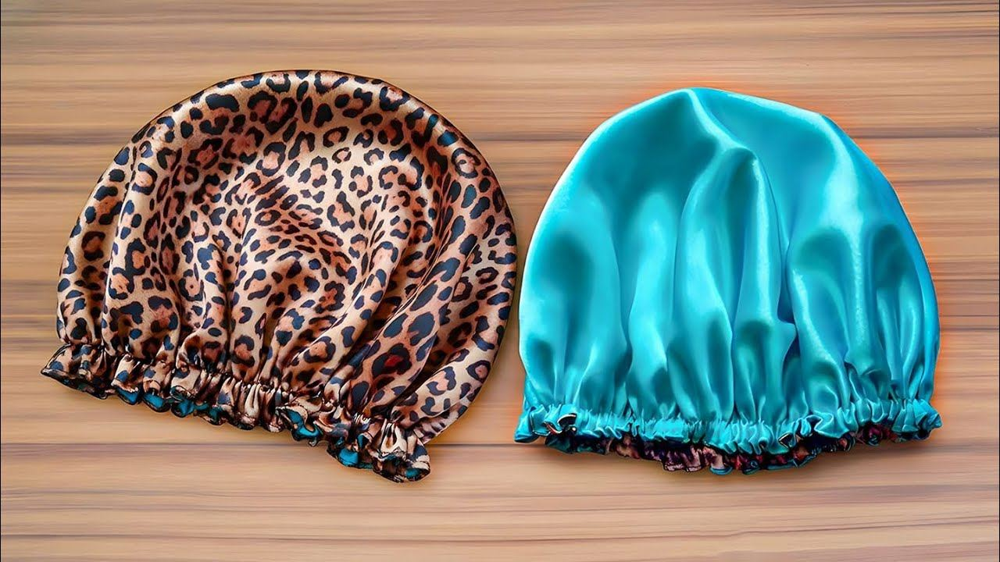

Baby and Toddler Bonnets: Protecting Little Hair From Day One
Baby hair is not small adult hair — it is finer, more fragile, and attached to a scalp that spends most of the day rubbing against something: a mattress, a car seat, a carrier, your shoulder. The back-of-head bald spot and the dry, fuzzy crown most babies develop are friction stories, and a soft satin bonnet is the gentle countermeasure generations of parents have used. The construction video below from Sewing World DIY (@SewingWorldDIY) shows what a bonnet is made of. This guide covers fit, fabric, and the safety rules that matter more than anything else here.
Why babies wear bonnets
Friction protection is the headline: satin's smooth surface lets the head glide across bedding instead of gripping and pulling at fine hair, which protects the delicate crown and edges through naps and nights. Moisture is the second reason — cotton bedding drinks the natural moisture from baby hair, and satin leaves it where it belongs.
Bonnets also hold gentle styles — protecting twists, puffs, and early protective styles so they last days instead of one sleep — and they keep little heads a touch warmer in air-conditioned rooms. None of this requires tightness. Protection here is about surface, not pressure.
Fit and fabric rules for little heads
Fit must be gentle-snug, never tight: the bonnet stays on through normal movement but slides off rather than gripping if it is pulled. Wide, soft bands distribute what little pressure exists; thin elastic that leaves a mark is wrong for a baby, full stop. Size up as they grow — a bonnet's fit should be checked monthly at baby growth speed.
Fabric: satin (silk or satin-weave) against the hair, soft and breathable overall, with no rough seams inside. Wash new bonnets before first wear with the baby's own laundry detergent, and keep them clean on the same rhythm as their bedding — a baby's bonnet collects milk, drool, and the world.
Safety, plainly
Follow the same safe-sleep guidance you follow for everything else in the crib: nothing loose and unsupervised that can cover a baby's face is a risk worth taking, so many parents use bonnets for supervised naps, tummy time on mats, car rides, and held time, and follow their pediatrician's and local safe-sleep guidance for overnight wear at each age. When in doubt, ask the pediatrician — they would rather answer the bonnet question than any question that comes after skipping it.
Used sensibly, the bonnet is one of the oldest and kindest tools in Black hair care — the same satin logic this whole site is built on, scaled to the smallest crown in the house. Protect it early, protect it gently.
Watch: how a satin bonnet is constructed, from Sewing World DIY — the design details to look for in a child's bonnet
Video: “How to Make a DOUBLE-SIDED Satin Bonnet || Stays On All Night” by Sewing World DIY (@SewingWorldDIY) · Watch on YouTube
Shop the gear
Everything in this guide runs on the right gear: a durag that holds compression without slipping, a cap that stays put, and fabric that treats your hair right. The durag.store launch lineup is built to that standard — dual-layer construction, long tails, and stitching made to survive the routine. Join the launch list and use code GOLDSTANDARD for 15% off your first order.
Keep learning
- Kids' Waves: A Gentle Start for Young Kings and Queens — Basic · Kids & Family
- Teaching Your Kid the Brush Routine: Angles, Habits and Patience — Basic · Kids & Family
- How to Tie a Durag for 360 Waves: The Standard Tie, Step by Step — Basic · Tying & Basics
Sources: Video — “How to Make a DOUBLE-SIDED Satin Bonnet || Stays On All Night” by Sewing World DIY (@SewingWorldDIY), youtube.com. Guide written by the durag.store Wave Lab.